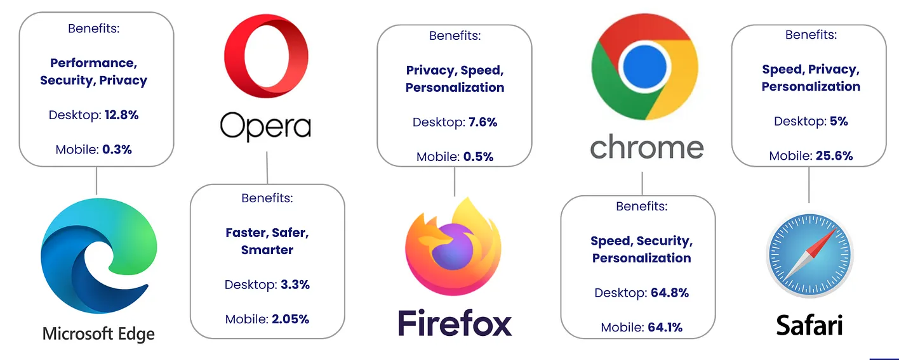

Major Browsers:

Image Source: Internet
Eventually, larger companies got involved and saw browsers as more than just software but as a gateway. Netscape was once a big player in browsers, but once Microsoft bundled Internet Explorer with Windows, it changed the browser game. The impact this had on the web ranged from how quickly browsers would implement features to how websites were made. It also had an impact on browser compatibility because some sites were only made to work with Internet Explorer. The browser wars taught us that browsers are not just software applications; they are a strategic resource. This still impacts how we discuss default browsers and market dominance today. Data also shows that innovation stagnates when competition is low between browsers. [6] That is another reason many people advocate for multiple browser options.
What happened after Internet Explorer began gaining market share? Open-source communities and companies decided to make a browser too. Mozilla and Firefox are widely known because they took a different route than other browsers. Mozilla valued transparency and allowed users to customize Firefox however they wanted. Firefox brought major changes and features that are considered modern today, such as better tab functionality and extension support. It also pushed other browsers to pay more attention to privacy and user control. Firefox remains one of the biggest competitors to major browsers, showing that strong competition can come from nonprofits and communities. [7]
Google decided to create Chrome, another browser that would compete for market dominance. Chrome focused heavily on speed and simplicity but also created a revolutionary process model that enhanced browser stability. [8] Chrome also introduced the world to frequent browser updates. These updates gave users more frequent features along with security updates. Chrome's display and speed influenced other browsers to adopt similar browser engines or similar features. This includes tabbed across multiple processes and better isolation with sandboxing. Chrome also became very popular because it worked well with Google services and had the largest extension library at the time.
Today there are many browsers that users use daily. However, there are several large browsers that most users choose from. When looking for a browser, users usually choose from Chrome, Microsoft Edge, Firefox, Safari, and Opera. [9]
| Browser Name | Developer | Initial Launch Date | Status |
|---|---|---|---|
| WorldWideWeb (Nexus) | Tim Berners-Lee (CERN) | December 25, 1990 | Historical |
| Mosaic | NCSA | April 22, 1993 | Historical |
| Netscape Navigator | Netscape Communications | October 13, 1994 | Historical |
| Internet Explorer | Microsoft | August 16, 1995 | Retired |
| Opera | Opera Software | April 10, 1995 | Active |
| Safari | Apple Inc. | January 7, 2003 | Active |
| Mozilla Firefox | Mozilla Foundation | November 9, 2004 | Active |
| Google Chrome | September 2, 2008 | Active | |
| Microsoft Edge | Microsoft | July 29, 2015 | Active |
| Brave | Brave Software | January 20, 2016 | Active |
How browsers Work:
When people think of browsers, they think of using browsers to look at websites, but there is a lot going on behind the scenes. Browsers read languages like HTML, CSS, and JavaScript to display content on webpages. They manage network connections and memory so websites open in a reasonable amount of time and maintain what is called a permissions ledger that gives sites permission to use users' camera, location, and other elements.
In simplified terms, a browser retrieves data from the web, constructs web pages from that data, and provides protection through encrypted connections. Browsers also rely on shared web standards.
To understand why each browser may act differently it is important to understand how browsers work behind the scenes. When a web page is loaded, browsers construct the DOM from the HTML, style it with CSS, lay out the page, and paint to screen. JavaScript can alter the DOM later, causing the page to re-layout and repaint, which can cause slow-rendering pages with too much scripting. Knowing this also explains how browsers optimize performance, memory consumption, and responsiveness. [10]
Lightweight Browsers and Future:
There is no single best browser because users have different needs. Some want privacy, some want extra features, and others want something simple. Browser articles help users find the best option for them. Some experts recommend using more than one browser; one browser for work and another for personal browsing. [11] As users begin to understand their needs, it will become clearer why there is no one correct answer when picking a browser.
More recently, there has been a push for browsers to be “low resource” or lightweight. What constitutes a lightweight browser? Lightweight browsers are typically faster, use less memory, and can open quickly. These browsers work well on older laptops and help save storage space and battery life. Lightweight browsers can improve performance when many background processes are running. Lightweight browsers will typically cut down on clutter to improve the browsing experience whether it be through trimming background-processes or simplifying design elements. As more devices are used over time, lighter browsers may become more popular. [12]
In the future, browsers will continue to improve as the websites become more advanced. Websites feel like applications today, which require browsers to support new features without compromising speed and security. Privacy and security will continue to be big topics as tracking online continues to increase and cyber threats become more dangerous. Despite new features and changes to browsers, the concept of browsers will likely stay the same: they will act as a software intermediary to safely experience the web.
Mobile vs Desktop Browsers
Mobile browsers and desktop browsers have the same functionality, but they are used differently. Desktop browsers are browsers typically used on laptops and desktops with bigger screens. Desktop browsers are able to multitask and allow user to use features with their full capabilities. Most users like to browse the internet with their desktop browser when working, researching, or using web applications because it is smoother and allows users to have more control over what they are doing
Mobile browsers are designed to be convenient and fast. Mobile browsers are used on phones and tablets. Mobile browsers load pages quickly and are optimized for easy navigation with touch screens. 59.99% of all web traffic throughout the world is generated by mobile devices while 37.78% of traffic is generated by desktop computers [13]. Most people use mobile browsers to browse the internet when doing tasks like going on social media, looking things up, and shopping because it is quick and portable.
Mobile vs Desktop Browser Usage Comparison [13]
| Category | Mobile Browsers | Desktop Browsers |
|---|---|---|
| Global Traffic Share | ~59.99% | ~37.78% |
| Device Type | Smartphones, Tablets | Laptops, PCs |
| Usage Style | Quick access, on-the-go | Work, detailed tasks |
| Screen Size | Small | Large |
| Performance | Optimized for battery | Higher processing power |
| Navigation | Touch-based | Mouse & keyboard |
Browser Components:
The browser has many components that work simultaneously in order to display requested content to the user. Components enable browsers to communicate with web servers and request web content which is then displayed on the screen. Web browsers are built with components such as the user interface, browser engine, rendering engine, networking, JavaScript engine, and data storage. The browser's user interface includes the address bar, buttons, tabs and so on. The browser engine allows the browser to communicate with the rendering engine. The rendering engine reads HTML and CSS code and then displays requested content from the server on the screen. Networking allows browsers to request resources from the web server. The JavaScript engine helps to read JavaScript code which is used to create web page behaviors. Data storage allows browsers to save data such as cookies and cache in order to speed up browser performance and loading time [14].
| Components | Function | Example |
|---|---|---|
| User Interface | Helps users interact with the browser | Address bar, buttons |
| Browser Engine | Connects different parts of the browser | Controls page loading |
| Rendering Engine | Displays website content | Shows webpage layout |
| Networking | Networking | Loads web pages |
| JavaScript Engine | Runs scripts | Forms, animations |
| Data Storage | Stores data | Cookies, cache |